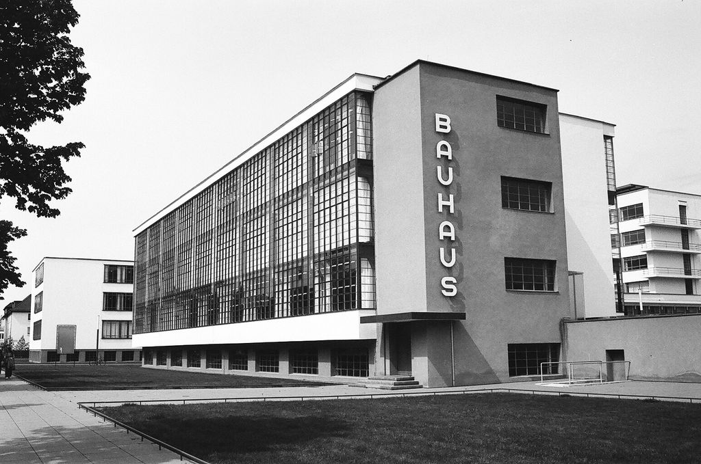
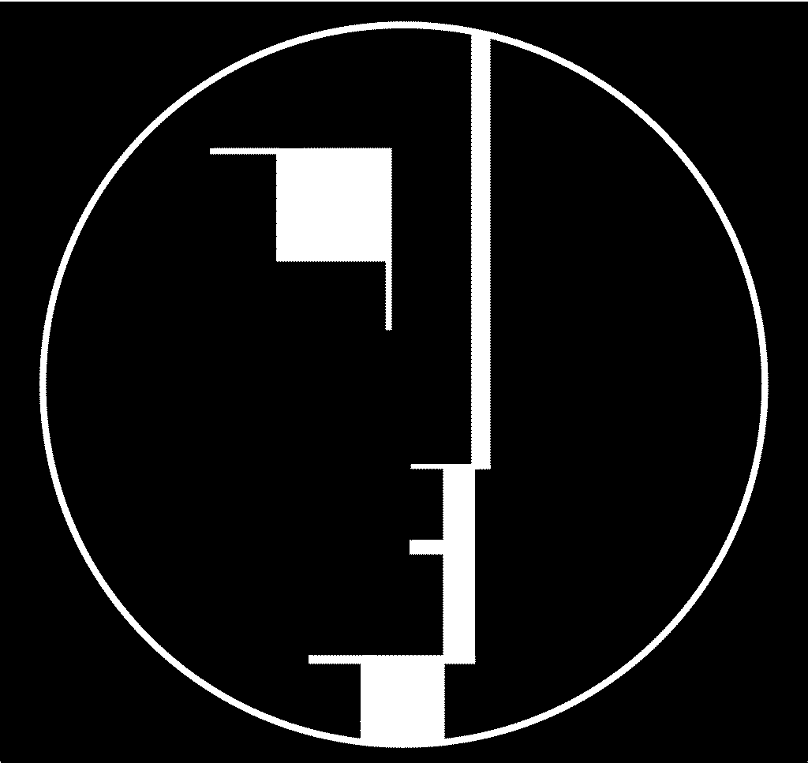

Le Bauhaus
1919-1936
Ce mouvement m'inspire au quotidien. Le seul fait que ce soit le début du design est quelque chose que je trouve incroyable. Tout est source de curiosité dans ce courant, j'aime lire des livres ou regarder des émissions sur le sujet.
De plus, le Bauhaus est le mouvement qui m’a appris ce que je connais aujourd’hui sur le design. J’ai eu la chance étant petite de visiter le musée du Bauhaus à Berlin et cela a été une révélation, tous ces objets d’apparence moderne, dont on pourrait croire qu’ils ont été produits il y a peu de temps. Voir des photos des années 30 représentant l’école du Bauhaus de Dessau avec son architecture faite de grands murs simples, de grandes vitres et le contraste avec les voitures ainsi que les personnes habillées avec des vêtements de ces années est fascinant.

Photographie du bartiment du Bauhaus de Dessau
J’aime vraiment le Bauhaus, je trouve que ce qui a été créé à ce moment-là a ouvert un nouveau champ de possibilités dans le monde de l’art et donc bien entendu, du design.

Logo du Bauhaus (créé en 1922)